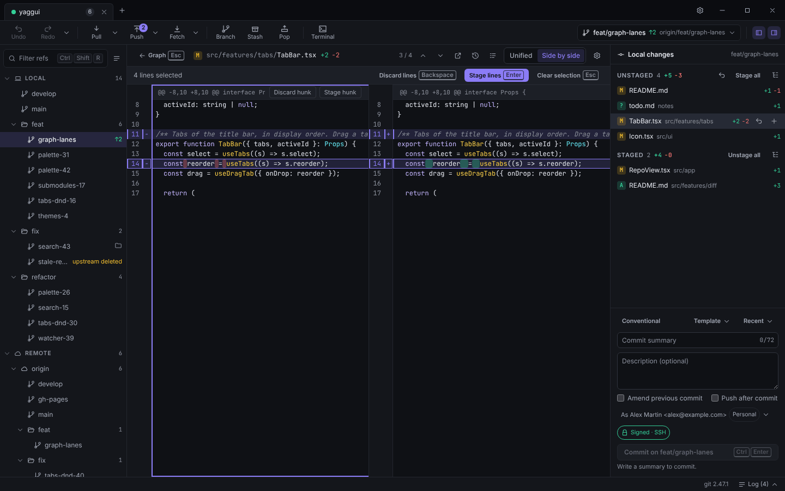
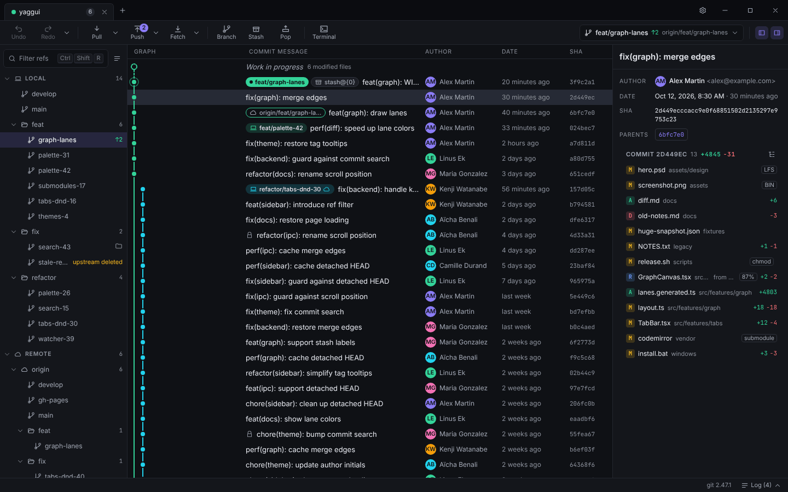
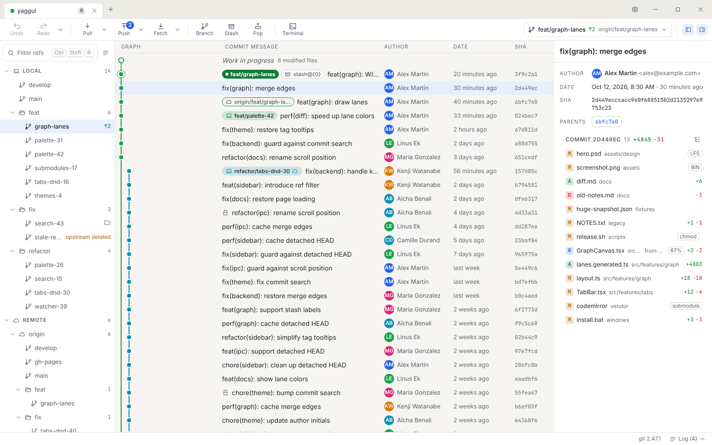

Stage files, hunks or lines
Select lines in the unified or split diff and press Space. Commit with ⌘↵.
yaggui is a fast, native Git client for macOS, Windows and Linux. A smooth commit graph, staging line by line, and undo for almost everything.


Features
Checkout is a double-click. Merge is a drag. Staging is Space. The rest is in the palette, behind ⌘K.

Select lines in the unified or split diff and press Space. Commit with ⌘↵.
Reorder by drag or keyboard, squash, reword and drop, with a preview before anything runs.
Drawn on canvas, paginated, with stable lane colors per branch. Drag a branch to merge or rebase.
Ours and theirs side by side, block checkboxes and an editable result.
An integrated terminal per repo, rebindable shortcuts, and a palette that searches everything.
Undo
yaggui records what each operation changes and puts the repository back the way it was.
Local and transparent
Every write goes through the git you already have, so your config, hooks and credentials just work. Each command lands in the log with its output.
--force-with-lease only, refused on protected branchesThemes
A dark theme and a light one designed together, plus high contrast and Terminal. English and French.
FAQ
Yes. It is open source under the GPL-3.0-or-later license, with no paid tier and no account.
Writes go through your own git binary (2.30 or later), so your config, hooks, SSH keys and credential helpers apply as usual.
The builds are not code-signed yet. On macOS, clear the quarantine flag or allow the app in Privacy & Security; on Windows, confirm the SmartScreen prompt.
No. There is no telemetry. Avatars from Gravatar are opt-in and off by default.
With Tauri and Rust. The code is written by Claude through Claude Code; a human sets the direction, reviews each pull request and tests the app.
Free, open source and ready in a minute. Updates install themselves.
brew install --cask simonvanmello/yaggui/yagguiDocs · Starlight with the same skin, under /docs
Everyday Git
Stage whole files, single hunks or individual lines from the diff, then commit with ⌘↵.
Select lines in the diff and press Space. yaggui builds a patch for exactly those lines and passes it to git apply --cached.
# As shown in the command log
git apply --cached --whitespace=nowarn --unidiff-zero -
| Stage or unstage the selection | Space |
| Stage all | ⌘⇧A |
| Commit | ⌘↵ |
| Undo the commit | ⌘Z |